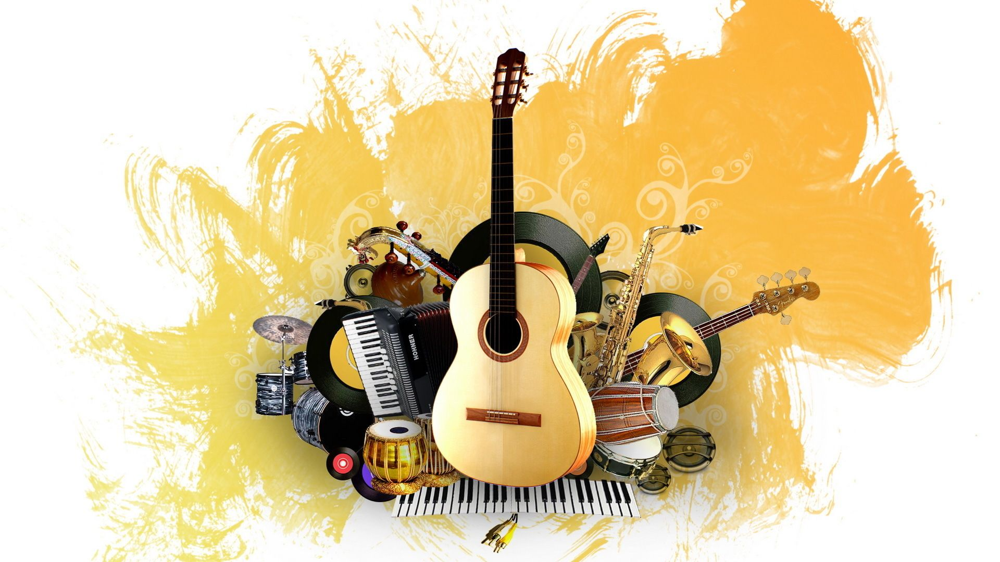

La música da color a nuestras vidas. ? A veces nos sentimos fuertemente vinculados a nuestras rituales diarios y la música se convierte en un activo para hacer la vida diaria más rica, interesante y variada. Escuchar tus canciones favoritas produce y estimula hormonas de la felicidad, participar activamente en la música es aún más importante. No hay límites: con una multitud infinita de instrumentos y estilos, la biodiversidad forma parte de la propia música y ningún músico se ha privado jamás de experimentar a su manera.
No hay nada más bonito en la vida que dedicarte en cuerpo y alma a una actividad. De hecho, la música no es concebible sin la cantidad adecuada de pasión y dedicación. Uno de los aspectos más satisfactorios de hacer música es el sentimiento de orgullo y satisfacción tan pronto como ocurren las experiencias exitosas: cuando puedes aprender a tocar un instrumento, por ejemplo, o cuando el aprecio proviene directamente del público.!
Se dice que la música va acompañada de cierta dependencia positiva: muchos músicos, confiesan que la música es una arma de doble filo ligada al sacrificio: dedos y labios entre otras partes del cuerpo sufren debido a la ejecución de los instrumentos. Los conciertos y ensayos pueden ser muy agotadores pero lo cierto es que ninguno de esos aspectos hace desistir a la gente. La razón es que para los músicos es inconcebible renunciar a las satisfacciones y momentos de felicidad que esta aporta en nuestras vidas. La música es una emoción feliz y deseable, que aunque puede doler, porque como todo tiene altibajos. ?
Está claro que nuestros hábitos auditivos nos influyen , es decir, tendemos a preferir e inspirarnos por lo que ya conocemos musicalmente. Utilizar nuevos sonidos y salir de nuestra «zona de confort» no siempre es fácil, es una cuestión de mentalidad. Sin embargo, ahora, mucho más que antes, tenemos la posibilidad de estar expuestos a la música en 360 grados gracias a todas las plataformas digitales y redes sociales existentes, hasta el punto de que la pregunta ha pasado a ser: ¿todavía es posible crear algo nuevo? Una opción en este caso podría ser combinar los diferentes gustos musicales de cada miembro del grupo. Podría ser un punto de partida interesante para nuevos géneros musicales.
